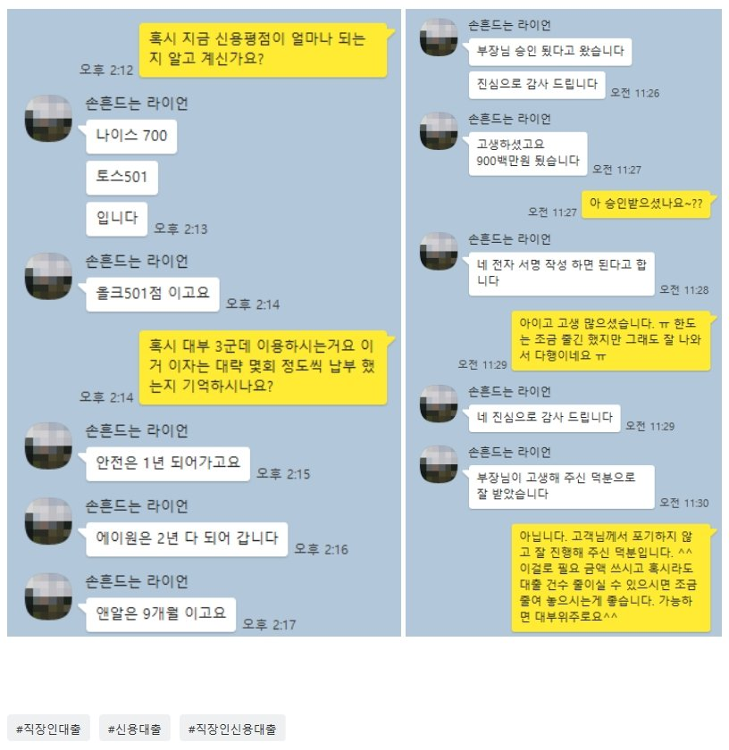

소득 대비 대출 건수 및 대출 금액 과다 이용자 900만원 추가 대출 사례!!
안녕하세요~ 뱅크앤론 임용현부장입니다. ^^ 오늘은 소득대비 대출 건수 및 대출 금액이 많은 직장인 고객님의 대출 사례를 안내해 드리겠습니다.
문의 주신 고객님은 재직 4개월에 사대보험 가입되어 있으시고, 연봉은 3600정도 되시는 직장인 이셨습니다.
현재 이용중인 대출 내역은 국민19 kb손해320 한화생명1800롯캐260 DB햇710 오케이저800 유진1300 농협700 안전, 에이원, 앤알 1200 으로 대출 건수 및대출 금액이 많은 상황이었습니다.
급하게 추가 대출문의를 주셔서 진행을 도와 드렸지만, 기존에 이용 하시는 대출 금액과 건수가 많아 대부업 대출도 진행이 많이 어려웠습니다.
다행이 고객님께서 이용하시는 대출들이 대부분 오래 되었고 최근 채무는 없으셨던 상황이라, 저축상품으로 조금더 안내해 드렸고, 900만원 16.27%로 추가 대출 금액을 받으실 수 있었습니다.
어려운 상황에 필요하신 대출금을 받으실 수 있어서 고객님도 매우 만족해 하셨습니다.
아래는 실제 고객님과 상담한 카톡 대화내용 일부를 캡쳐 한 것이오니 참고하시어 많은 도움 되셨으면 좋겠습니다. 감사합니다. ^^
